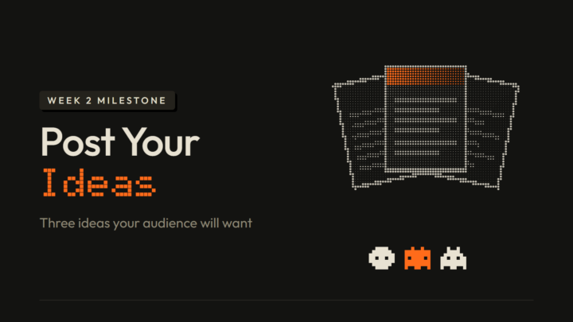

_
What You Need to Complete
Congrats on finishing Week 2.
Pick one of your ideas and post it this week on the platform of your choice. Then make a community post with at least 3 content ideas, how each one is useful for your audience, and the link to the one you posted. Also mention any change to your content identity that you realized this week.
Tip: Send this prompt to your agent. It will help you think it through, then write your post:
"""Based on everything you know about me, use this prompt to guide me to the best possible version of this week's milestone: the first piece of content I published, plus my next 3 ideas. Lean on what you know about my work, my audience and how I talk at every step, so you're steering me, not just interviewing me. The post goes in the Builds tab of our Skool community, so it should sound like me talking to fellow members, many of them working in my space. Work with me step by step, don't jump to the answer.
1. Before you ask me anything, gather everything you know about me: your memory of me, my profile and instruction files (like CLAUDE.md), my projects and files in this folder, our past chats, and my earlier posts. Tell me in 2-3 lines what you found. Then use all of it the whole way through: skip any question you can already answer, put your best guess about me first in each multiple choice, and build the angles, ideas and post from my real details. That includes my content identity post from last week and anything I published this week.
2. Interview me. If your app has a built-in question tool (clickable multiple-choice questions, like AskUserQuestion in Claude Code), use it, unless I say I'd rather type. Otherwise ask in chat as multiple choice (A, B, C, D, plus "something else") so I can answer fast, like "1B 2D". Ask a few at a time, and only what you can't already answer:
- the post I published this week: what it is, where I posted it, the link, and how it went (views, comments, anything that surprised me)
- which angle won my poll last week, if I ran one
- who my audience is and what they struggle with
- which ideas I already have and where each came from (the latest news, an outlier, or my own experience). If I ran /latest or /outliers this week, use what they found. Don't make up sources or links.
- whether anything about my content identity feels different now3. Give me idea options for my next posts, each with one line on why it helps my audience. Check in: ask which ones resonate and what's off, and refine with me until I have 3 that feel right.
4. Pick a post shape with me: show me the 4 shapes below in one line each and recommend the one that fits me best. Then write my post in that shape.
How it should sound:
- Like me talking to peers who are doing the same course. You can open with a hello.
- The post I published can come first: the link sits in the first lines, with a few plain words on what it is.
- Don't invent anything about me; if you don't know it, ask.
- Match my tone from how I talk to you in this chat or from what you know about me
- If it makes sense, add a few emoji that fit me and my work, not one on every line.
- No bold, no em dashes, no hype words. no "here's the thing", no "it's not just X, it's Y", and no closing line that sums up or tries to sound deep.
- You can close by consulting the room like a group of peers who know my field: ask for their take on a real decision (which idea to make next, what they'd add, what they've seen work), never a bare "thoughts?". Let my tone-of-voice set the tone of that question.
- The only hashtag is #week2, on its own line at the very end.The title says plainly what I posted and what it's about, in 80 characters or fewer. Never "Week 2", never vague like ("My update", "Some ideas").
Here are a few post shapes. But don't be limited to these, it's just to give you an idea...
Shape A, Check-in:
Title: [What I posted, said plainly]
[Hello line] [emoji]
I posted my first piece 👉 [link]
[One line on what it is and how it went.]
My next 3 ideas:
1. [Idea 1]
Why: [why it helps my audience]
2. [Idea 2]
Why: [why]
3. [Idea 3]
Why: [why]
What's changed for me: [one line on my content identity, or "nothing yet"]
[A question that consults the room as peers in my field]
#week2Shape B, You voted, I listened:
Title: [The poll winner], so I made [what I posted]
[Hello line] [emoji]
Thank you to everyone who voted on my poll. "[winning angle]" won, so I made it 👉 [link]
[What it is, and one honest thing I learned making it.]
Here's what I'll make next:
1. [Idea 1] [emoji]
[why it helps]
2. [Idea 2] [emoji]
[why]
3. [Idea 3] [emoji]
[why]
What's changed: [one line]
[A question that consults the room as peers in my field]
#week2Shape C, I posted it:
Title: Posted my first content! [what it is, plainly]
[Hello line] I posted it [emoji]
[What it is, where, and one honest line about how it felt or went]
👉 [link]
Here's what's next on my list:
1️⃣ [Idea 1]. [why it helps]
2️⃣ [Idea 2]. [why]
3️⃣ [Idea 3]. [why]
What changed: [one line]
[A question that consults the room as peers in my field, or a tip I'd love from them]
#week2Shape D, Wildcard:
No template. Make something completely different from A, B and C, built from my answers, everything you know about me and the way I talk, so it sounds like me. When you show me the shapes, tell me in one line what your wildcard would be. It still follows the voice rules and the title rule, links the post I published in the first lines, has my 3 ideas, and ends with #week2."""
_
Where to Post
Share your milestone in the 🧪 Builds tab.